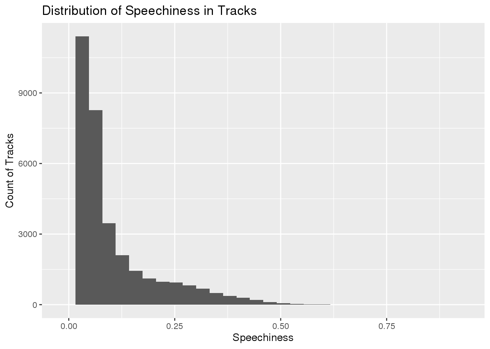

library(here)
library(tidyverse)
library(ggplot2)
dat <- read_csv(here::here("data", "spotify_songs.csv"))This data set comes from the spotify_songs.csv file on the Tidy Tuesday website. The data consists of 32,833 observations of 23 variables. The variables track_id, track_album_id, and playlist_id are all unique IDs for the track, album, and playlist, respectively. The variables track_name, track_artist, track_album_id, track_album_name, and track_album_release_date are all variables that give details on the track to help with identification. The variables playlist_name, playlist_genre, and playlist_subgenre give information on what type of track it is, in other words what type of playlists it is on. The variables, danceability, energy, key, loudness, mode, speechiness, acousticness, instrumentalness, liveness, valence, and tempo describe different characteristics of the track using a numeric scale. The last variable duration_ms gives the duration of the track in milliseconds.
Is there a positive correlation between the danceability and the popularity of the track?
dat %>%
filter(track_popularity > 0) %>%
ggplot(., aes(x = danceability, y = track_popularity)) +
geom_point(alpha = 0.1) +
geom_smooth() +
ggtitle("Track Popularity vs. Danceability") +
xlab("Danceability") +
ylab("Track Popularity")dat %>%
ggplot(., aes(x = danceability, y = track_popularity)) +
geom_point(alpha = 0.1) +
geom_smooth() +
ggtitle("Track Popularity vs. Danceability Broken Up by Playlist Genre") +
xlab("Danceability") +
ylab("Track Popularity") +
facet_wrap("playlist_genre")The graphs above show that overall, the danceability does not have much of an impact on the popularity of a track, unless the danceability indicator is 0.75 or above, and then danceability does have a positive impact on the track popularity. However, as seen in the second graphic, danceability has a greater impact on popularity depending on the genre of the playlist the track appears on. R&B and Rock tracks show similar patterns to that of the overall effect of danceability on popularity. While, EDM and Latin playlist genres show a decrease in track popularity as the danceability increases. For Pop and Rap however, a consistent increase is seen in popularity as the danceability increases.
The valence of the track determines if it sounds happy or sad, does the valence change throughout the seasons of the year?
library(tidyr)
dat %>%
separate(., "track_album_release_date", c("Year", "Month", "Day"), sep = "-" ) %>%
group_by(Month) %>%
summarise(average_valence = mean(valence, na.rm = TRUE)) %>%
filter(!is.na(Month)) %>%
ggplot(., aes(x = Month, y = average_valence)) +
geom_line(group = 1) +
ggtitle("Average of Valence of Songs Over Each Month") +
ylab("Average of Valence") +
ylim(0.4, 0.6)The graph above shows the average valence of songs that are released in a certain month and how it changes over the course of a year. A higher valence indicates a happier, more upbeat sounding song, so I predicted that the average valence would be higher for songs released during spring and summer months. For the most part this is true, with the exception of songs that are released in January, have the highest valence of all months. Additionally, the average valence does not change much over the course of the year, there is only about a 0.05 difference in the valence level between January, the highest month, and December, the lowest month.
What is the distribution of speechiness?
Speechiness is defined as the presence of spoken word in a track. Speechiness variables close to 1 are predominately words, like a podcast or talk show. Speechiness above 0.66 are mostly spoken word, between 0.33 and 0.66 may include both music and words, and below 0.33 indicates mostly music.
dat %>%
ggplot(., aes(x = speechiness)) +
geom_histogram() +
ggtitle("Distribution of Speechiness in Tracks") +
xlab("Speechiness") +
ylab("Count of Tracks")
dat %>%
ggplot(., aes(x = speechiness)) +
geom_histogram() +
facet_wrap("playlist_genre") +
xlab("Speechiness") +
ylab("Count of Tracks") +
ggtitle("Distribution of Speechiness by Playlist Genre of Track")The first graph above that shows the distribution of all tracks with their speechiness variable shows that the majority of Spotify tracks collected in this data set are predominately, if not all, music without words. If just assessing the tracks based on their speechiness value, it would appear that there are very few words spoken in most tracks. The graph does not show hardly any tracks that have a speechiness value that is over 0.50, and not any that are almost 1.0 indicating that there are very few, if any at all, podcasts or spoken word tracks in this sample. However, by breaking down the data into a playlist genre, we are able to see that the speechiness is significantly higher for some genres of music. For example, rap has a much less skewed distribution, and has some tracks with speechiness values greater than 0.75. Whereas genres like rock and pop have an even more severe right skewed distribution showing that almost all of the tracks in these two genres have very few words spoken in them. These graphs could more easily help define what makes a certain track into a genre.
Does the duration of a track impact the popularity?
dat %>%
filter(track_popularity > 0.0) %>%
ggplot(., aes(x = duration_ms, y = track_popularity)) +
geom_point(alpha = 0.1) +
geom_smooth() +
ggtitle("Track Popularity vs. Track Duration in Milliseconds") +
xlab("Duration (ms)") +
ylab("Track Popularity")dat %>%
filter(track_popularity > 0.0) %>%
ggplot(., aes(x = duration_ms, y = track_popularity)) +
geom_point(alpha = 0.1) +
geom_smooth() +
ggtitle("Track Popularity vs. Track Duration in Milliseconds by Genre") +
xlab("Duration (ms)") +
ylab("Track Popularity") +
facet_wrap("playlist_genre")The first graph above plots the popularity of a track versus the duration of the track in milliseconds. The line of best fit shows that the highest possible track popularity occurs around 2e+05 milliseconds, or about 3 minutes and 20 seconds. Additionally, it appears that the majority of tracks regardless of popularity appear to fall close to this time frame. The second graph shows the same things, but broken down by genre of the playlist the song is on. From this graphic we can see that for some genres, specifically rock tracks, the duration of the song has little to no impact on the popularity. However, for other genres like EDM and R&B, a shorter song has a significantly higher popularity rating. All genres however start to how at least some decline in track popularity once the song is longer than about 3 and a half minutes.